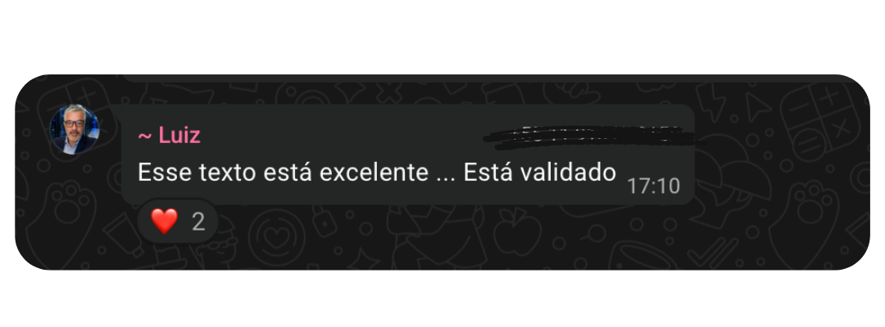
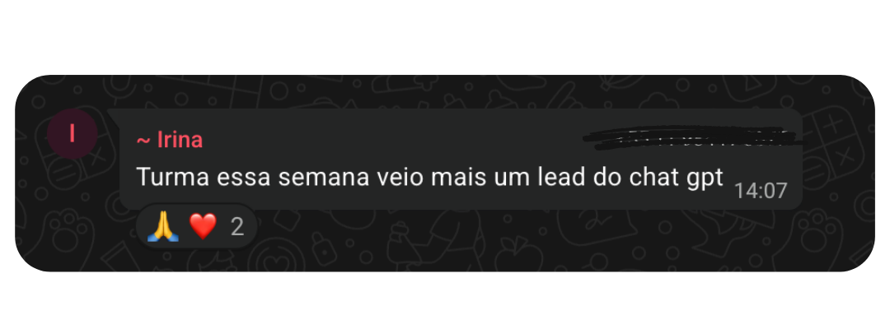

O que eu faço
Serviços e ferramentas que uso no dia a dia
Redação otimizada
Redação estratégica para páginas institucionais, landing pages, categorias, produtos e blogs.
 WordPress
WordPress
Pesquisa de Palavras-chave
Identificação de oportunidades para aumentar tráfego orgânico e relevância.
 SE Ranking
SE Ranking
Planejamento Editorial
Calendário editorial com pautas estratégicas para fortalecer seu SEO e atrair tráfego qualificado.
 notion
notion
 trello
trello
Análise de Performance
Monitoramento de indicadores e acompanhamento de resultados.
 GA4
GA4
 Search Console
Search Console
Otimização de Site
Seu site mais rápido, relevante e preparado para aparecer nos mecanismos de busca e nas IAs.
 PageSpeed
PageSpeed
 Lighthouse
Lighthouse
 GTmetrix
GTmetrix
Automação de Marketing & CRM
Criação de fluxos de nutrição, campanhas de e-mail e organização do funil de vendas.
 RD Station
RD Station
 Mailchimp
Mailchimp
 ActiveCampaign
ActiveCampaign
SEO Local
Otimização do Perfil da Empresa no Google Meu Negócio e buscas locais.
Está contratando um profissional de SEO?
Confira minhas frentes de atuação
Freelancer
Projetos pontuais com escopo definido.
Parceira para agências
Apoio técnico e de conteúdo para o time.
Projetos específicos
Entregas com prazo e objetivo claros.
Apoio a equipes internas
Reforço de SEO para o time que já existe.
Projetos e Experiências
Collect ABA
SaaS • B2B
SEO técnico e produção de conteúdo
Wise Offices
SaaS • B2B
Estratégia editorial e otimização de conteúdo
Lojas Edmil
E-commerce
SEO técnico e redação de conteúdo
ZONA ZERO
portal de notícias
Redesenho do layout, copy e SEO técnico
ITGLOBAL Brasil
IaaS • B2B
Estratégia de conteúdo e SEO técnico
Lopes Moradia Carioca
Imobiliária
SEO técnico e otimização de páginas
Resultados esperados
Feedbacks de Clientes
O que dizem sobre o trabalho


Sobre Mim
Débora Machado
Analista de SEO & Marketing de Conteúdo
Prazer, eu sou a Bee! 🐝
Sou formada em Comunicação pela UFRN e atuo há mais de 7 anos no Marketing Digital, com participação em mais de 50 projetos de diferentes segmentos.
Hoje trabalho como Analista de conteúdo SEO, criando estratégias que ampliam a visibilidade orgânica de marcas no Google e nas IAs generativas. Também venho aprofundando meus conhecimentos em SEO Técnico, com foco em otimização de sites, arquitetura da informação e performance.
Criei a BeeSEO como um espaço para colocar em prática o que aprendo, testar estratégias de SEO e GEO na própria pele e mostrar, de forma concreta, os serviços que ofereço.
Assim como uma colmeia é construída célula por célula, acredito que uma presença digital forte é construída página por página, conteúdo por conteúdo e melhoria por melhoria. SEO é um trabalho contínuo, estratégico e consistente, capaz de gerar resultados duradouros.
Se quiser acompanhar essa jornada, conheça o meu blog . Lá compartilho estudos, experimentos e aprendizados sobre SEO, Marketing Digital e Inteligência Artificial.
Bem-vindo à BeeSEO. Vamos construir sua presença digital, uma página de cada vez.
Soft Skills
Pensamento Analítico
Capacidade de transformar dados em decisões estratégicas.
Organização
Gestão eficiente de projetos, prazos e prioridades.
Comunicação
Facilidade em traduzir informações em ações práticas.
Aprendizado Contínuo
Busca constante por atualização e evolução profissional.
Perguntas Frequentes
Tire suas dúvidas sobre SEO e como posso ajudar o seu negócio
SEO (Search Engine Optimization) é o conjunto de estratégias técnicas e de conteúdo que fazem um site aparecer nos primeiros resultados do Google de forma orgânica, sem pagar por anúncios. Envolve desde a estrutura e velocidade do site até a forma como o conteúdo responde às perguntas reais do seu público.
GEO (Generative Engine Optimization) é a otimização do seu conteúdo para ser reconhecido, confiado e citado por ferramentas de IA como ChatGPT, Perplexity e Google com IA. Para isso, é preciso ter uma base sólida de SEO, conteúdo com autoridade real, dados estruturados e uma presença digital consistente. Sem SEO, não há GEO.
Em geral, os primeiros resultados aparecem entre 3 e 6 meses e, resultados mais consistentes, entre 6 e 12 meses. O prazo varia de acordo com a concorrência do nicho, o estado atual do site e a frequência de publicação de conteúdo. SEO é um investimento de acúmulo, quanto mais cedo começa, mais cedo colhe os frutos.
Sim, e as duas estratégias se complementam muito bem. O tráfego pago traz resultados imediatos enquanto o SEO constrói uma base orgânica sustentável. A grande vantagem do SEO é que, uma vez consolidado, continua gerando visitas mesmo quando o orçamento de anúncios é reduzido ou pausado.
Funciona e, muitas vezes, com vantagem sobre grandes concorrentes. Pequenas empresas conseguem produzir conteúdo mais específico e próximo do público, o que pesa a favor delas tanto no Google quanto nas respostas de IA. Além disso, o custo por resultado tende a cair com o tempo, ao contrário da mídia paga.
SEO Técnico é a parte que garante que o Google (e as IAs) consigam rastrear, entender e indexar o seu site corretamente. Envolve velocidade de carregamento, estrutura de URLs, dados estruturados, correção de erros, sitemap, robots.txt e Core Web Vitals. É a fundação que sustenta todo o trabalho de conteúdo.
Começa com um diagnóstico do seu site e do seu mercado. A partir daí, definimos juntos a estratégia e quais palavras-chave priorizar, quais conteúdos criar ou otimizar e quais ajustes técnicos são necessários. O acompanhamento é contínuo, com relatórios de desempenho e ajustes ao longo do tempo. Fale comigo e vamos conversar sobre o seu projeto.